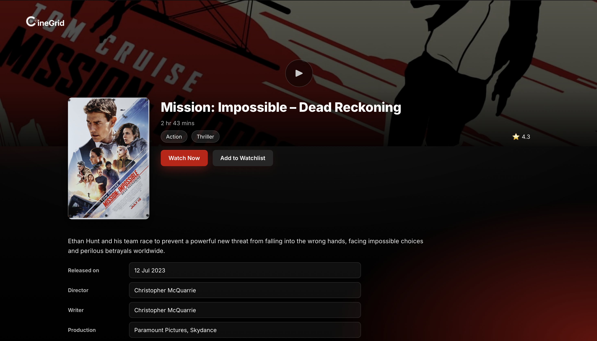
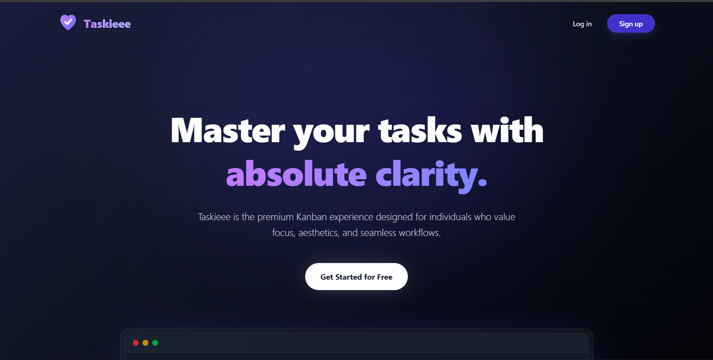
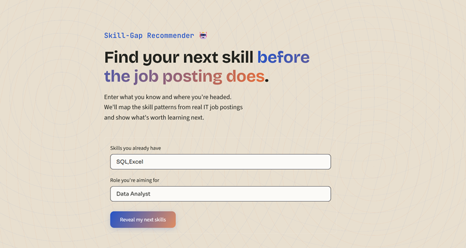
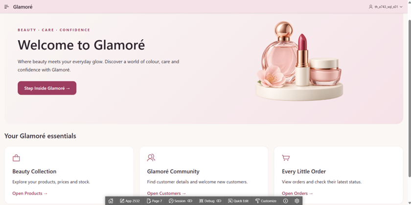
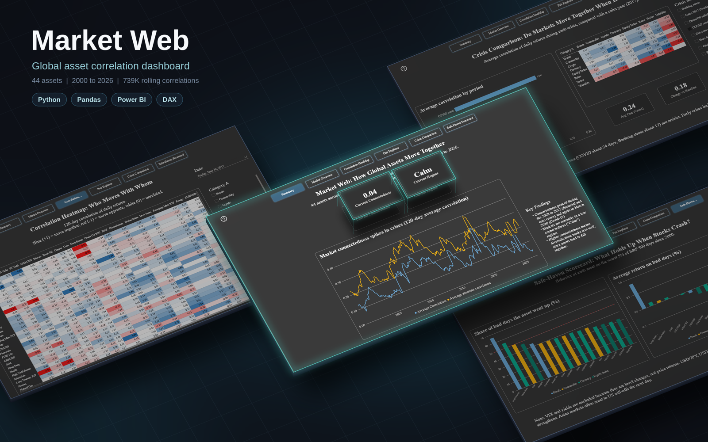
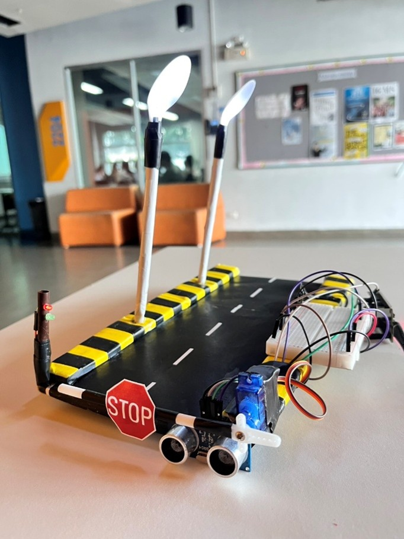

Featured Projects

CineGrid Movie Website
Goal: Design and build a front-end prototype of a cinema website as a final project for ITE 120, focused on UI/UX and how a streaming platform should look and feel, without a backend.

Taskieee Task Manager
Goal: Design and build a full-stack task management web app as a capstone project for a Vue.js full-stack development course, helping users organize, prioritize, and track everyday tasks.

Skill-Gap Recommender
Goal: Help IT students and fresh graduates choose what to learn next by combining skill patterns from real job posts with AI-generated explanations.

Glamoré Cosmetics Retail System
Goal: Design and build a cosmetics retail database application to organize products, customers, orders, payments, and stock records through Oracle APEX forms, reports, and dashboards.
Linguage Online Language Learning System
Goal: Design an online language learning system that brings courses, lessons, practice, progress tracking, and subscriptions together, with separate interfaces for learners and administrators.

Global Market Web Analysis
Goal: Analyze how 44 global assets (stocks, commodities, currencies, crypto, and bonds) move together from 2000 to 2026, and test whether those relationships tighten during market crises, using rolling correlations and an interactive Power BI dashboard.

Course Management System
Goal: Build a Java console application for BSc IT students and instructors to manage and access course schedules, replacing scattered timetable information with one structured, role-based system.

Boom Gate & Street Lamp IoT
Goal: Design and build an ESP32-based IoT system to automate toll gate control, vehicle detection, and street lighting for small-scale enterprises, monitored and controlled remotely through the Blynk app.